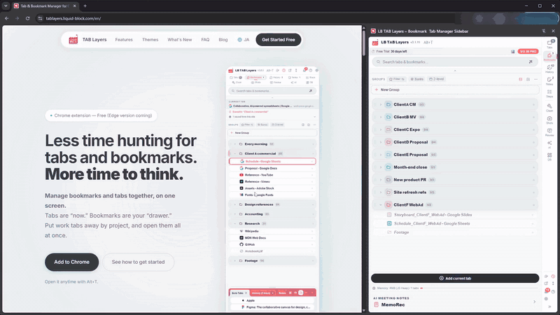
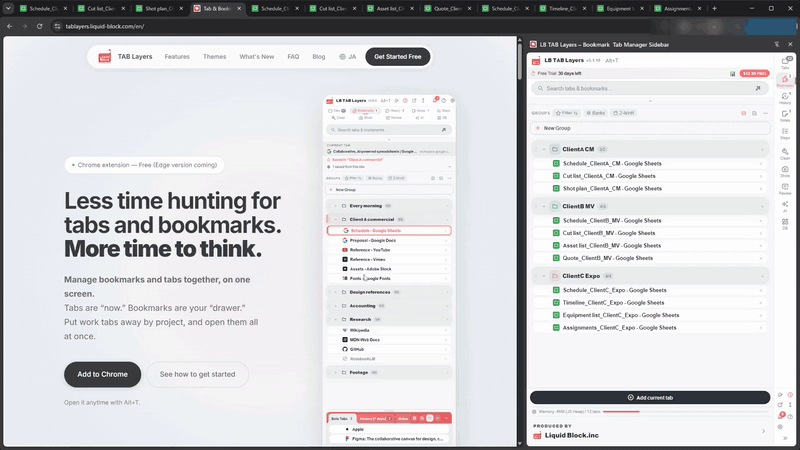
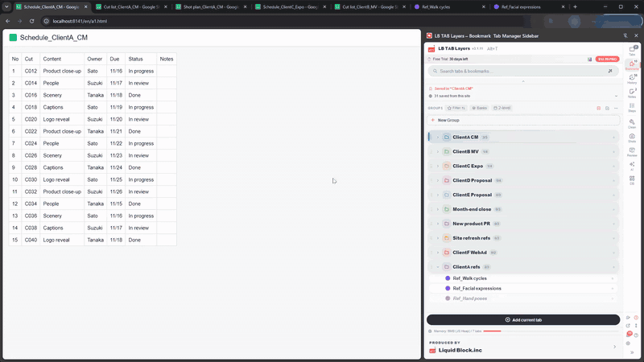
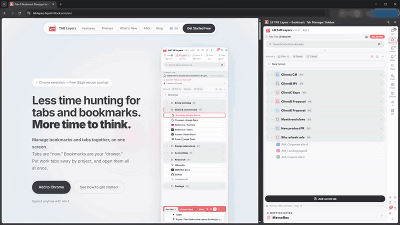
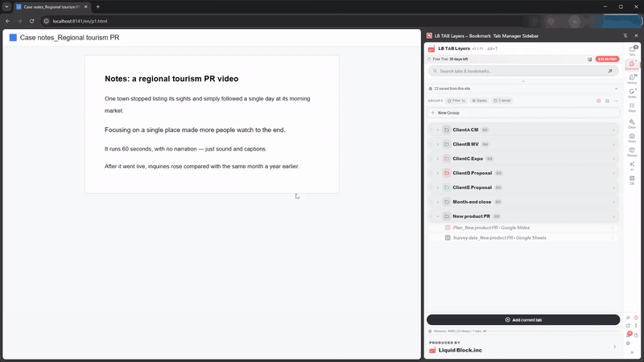
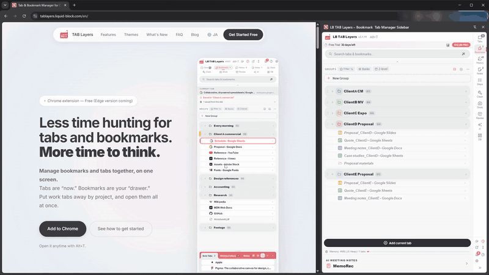
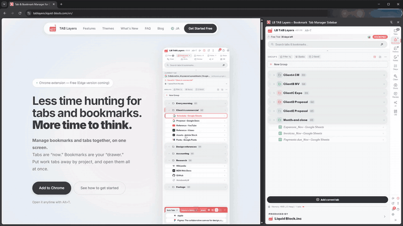

A common problemReferences and feedback end up scattered across projects.

Open the project and copy the location of the footage folder. Pause the video on your computer and write right there. The notes you write come together on a timecoded sheet (about 60 seconds).
A common problemSchedules, feedback and due dates are scattered across projects. You lose track of which sheet is the latest.

Three projects, eleven schedules and cut lists. Put away the projects you are not working on, leave a note on today’s schedule, work through the steps, then move to the next project. One continuous flow (about 100 seconds).
Put away the projects you are not working on with ■. Only today’s schedule and cut list remain.Close all tabs ■
When you are done, close everything together with ■. The bookmarks stay.Close all tabs ■
Open the next project’s pages together with a single ▶.Open all tabs ▶
Animators & 3D modelers
People who create while looking at references, and fix things when feedback comes back.
A common problemDozens of reference pages, schedules and cut lists stay open.

From tabs where references and lists are mixed together, put away the lists you don’t need right now. Open a reference, filter its images by size, and leave a note. Check the feedback you received, and close everything when you are done (about 100 seconds).
Put away the lists you don’t need right now with ■.Close all tabs ■
Check the feedback you received on a timecoded sheet, moment by moment.Revision sheet
When you are done, close everything together with ■.Close all tabs ■
Designers & web production
People with lots of reference sites and screenshots.
A common problemThe references you wanted to look at later can’t be found.

Open the reference sites together, and capture the pages that catch your eye one after another. When they build up, look across them on a big screen (about 50 seconds).
Open a project’s reference sites together with a single ▶.Open all tabs ▶
Keep the assets folder in the same group.PC folders
Capture a page that catches your eye with one button.Capture this page
After a few captures, save them together as a PowerPoint and hand it over.Save all
People who gather material from all over and build a plan.
A common problemYou lose track of where the examples and numbers you collected are.

Put an example you found into the plan’s group on the spot. Leave your thoughts in a note and capture the page. Later, find it all from one box (about 50 seconds).
Put an example into the plan’s group the moment you find it.Add current tab
Capture pages as the starting point for a PowerPoint.Save all
When you need them, search from one box. Bookmarks and notes alike.Search
Sales planning
People who manage clients and materials deal by deal.
A common problemEvery proposal means hunting for the same pages and opening them again.

Open a client’s pages and copy the location of the materials folder. Create the steps up to submission and work through them, close everything when you are done, and move on to the next client. One continuous flow (about 60 seconds).
People who want to get through each day’s procedures without missing a step.
A common problemMissed steps, and opening the same pages again and again.

Create the steps for the month-end close from a template. Open the pages you need together and leave what you notice in a note. Check off the steps one by one, and close everything when you are done (about 75 seconds).
Create the steps from a template and attach them to the job’s group.Link to a project
Open the pages you need together with a single ▶.Open all tabs ▶